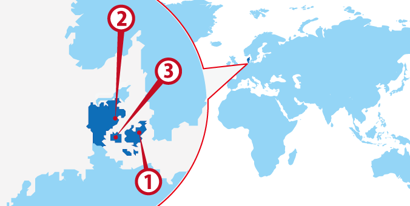
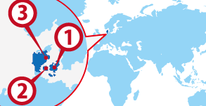

- København
- Aarhus
- Odense
協定国一覧へ戻る

ワーホリ協定国一覧へ戻る

デンマーク人気都市 BEST3
デンマーク基本情報
| 首都 | København |
|---|---|
| 言語 | Dansk |
| 面積 | 43,094 km²(世界130位) |
| 人口 | 5,602,536人(世界108位) |
| 通貨 | Dansk Krone (DKK) |
＊2014 年10 月時点の数値です
| 日本時間 | København |
|---|---|
|
1月1日 09:00am |
1月1日 02:00am |
＊サマータイムの期間は時差が変動します
| 首都 | København |
|---|---|
| 面積 | 43,094 km²(世界130位) |
| 人口 | 5,602,536人(世界108位) |
| 言語 | Dansk |
|---|---|
| 通貨 | Dansk Krone (DKK) |
＊2014 年10 月時点の数値です |
|
日本との時差
| 日本時間 | København |
|---|---|
|
1月1日 09:00am |
1月1日 02:00am |
＊サマータイムの期間は時差が変動します
デンマークってどんな国？
スカンジナビア半島、北欧諸国で南に位置するデンマーク。近年ではデザインの国として北欧家具や北欧雑貨が人気を集めている。デザインは街並みにも反映されており美しい自然と可愛い建物が並ぶ風景はおとぎの国のイメージだ。 田舎の風景も田園に古城と風車が点在してまるでミニチュアを作ったようだ。 一番高い標高でも173mしかなく国全体全体がなだらかで歩きやすい。そのためエコ先進国として普及している自転車も乗りやすくは本当に多く見かけるだろう。 デンマークでの自転車の多くはペダルブレーキなのでハンドルにペダルが付いていない。日本人には慣れるまで注意が必要だ。 国王制なので日本の天皇家と交流があり親日国家とも言える。童話アンデルセンとレゴ発祥地というのも納得だ。
▼▼▼まずは無料セミナーへ！ワーキングホリデー＆留学の無料セミナーはこちら！▼▼▼